Nioh 2 has a total of: 88 achievements / trophies split into 81 Bronze, 5 Silver, 1 Gold, and 1 Platinum trophy.
There is 1 achievement that requires the player to continue past New Game. The achievement "Way of the
Vanquisher" requires the player to reach Dream of the Demon (NG+2). The remaining 87 achievements can be
completed on Dream of the Samurai (NG) or Dream of the Strong (NG +1) difficulty. It is recommended to continue
playing past NG instead of farming / griding on NG. By playing the game past NG most if not all achievements will
be unlocked. Below is a table containing all of the achievements.
Order of achievements and the data for specific guides comes from PYJAMADS' Nioh 2 - 100% completion guide, and
Phantom2654's Nioh 2 Trophy Guide; which can be found
here and
here.
| Achievement | Description |
|---|---|
You Are Nioh
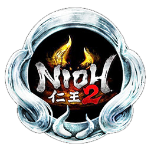
|
[Platinum Trophy] You have unlocked all Achievements! |
Dawn of a Dream

|
Befriended Tokichiro. Complete the main mission: The Village of Cursed Blossoms. |
An Electrifying Triumph
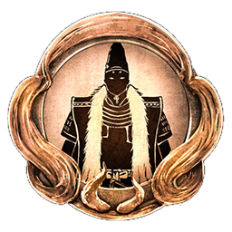
|
Defeated Imagawa Yoshimoto, and was made a Samurai. Complete the main mission: The Hidden Monsters of Okehazama. |
Hideyoshi

|
Decided to share a name with Tokichiro. Complete the Soaring Region (2nd region) and move onto the Shadow Region (3rd region). |
The Paths We Tread
|
Parted ways with Tokichiro. Completed the main mission: The Sun Sets on Mount Tenno. |
Dream's Toll
|
Defeated Tokichiro. Completed the main mission: The Two Faces of Hospitality. |
|
Mother and Child

|
Reunited with your mother in the Interim. Completed the main mission: The High-Spirited Demon. |
What is Written
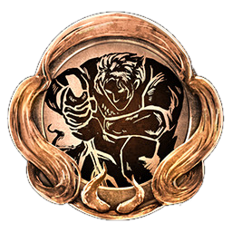
|
Fulfilled your ultimate destiny. Completed the main mission: Sealed Fate. |
Dream Within a Dream
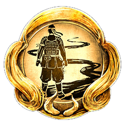
|
Saw Tokichiro off on his final departure. Completed the main mission: In the Eye of the Beholder. |
Bold Wrangler
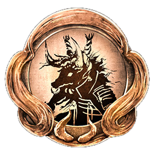
|
Defeated Gozuki in the main mission: The Village of Cursed Blossoms. |
Grazer Eraser
|
Defeated both Gozuki and Mezuki in a single mission. This can be done in the following missions: The Village of Cursed Blossoms, The Refined Man of the Underworld, and The Golden Castle. |
Devout Believer
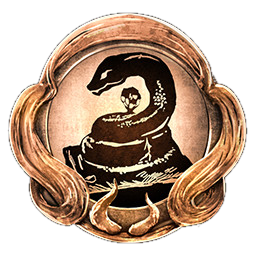
|
Defeated the boss of The Viper's Sanctum without breaking the statues of Shirohami. (DO NOT break any of the Snake Statues!) It is recommended to return to this mission later to get this achievement. |
Feather Buster
|
In the main mission: A Way Out there are 2 regions with searchlights, getting spotted by the searchlight will spawn in a Red Orb nearby. Destroying the Red Orb will get rid of the spotlight. Destroying both Red Orbs in the level will unlock the achievement. You can also shoot Tatarimokke directly to drive it away in these regions. You can view the guide here. |
Schemer
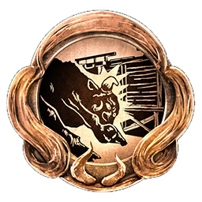
|
Got Gyuki to attack the dam in the main mission: Pervading Waters. You can view the guide here. |
Hidden Hopes
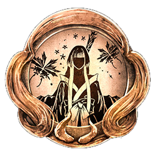
|
Encountered all of the Usura-Hicho butterflies in the main mission: The Frenzied Blaze. Interact with all 3 Usura-Hicho butterflies. You can view the guide here. |
Peal of Ten Thousand Bells
|
Ring and drop all of the bells in the main mission: Ruin Draws Near. There are a total of 6 Bells. You can view the guide here. |
Clean Sweep
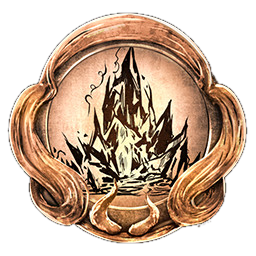
|
Destroyed every large Amrita Crystal in the main mission: The High-Spirited Demon. There are a total of 6 large Amrita Crystals. You can view the guide here. |
Seven Wonders
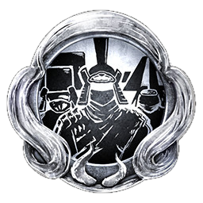
|
Defeated each of the Seven Spears in the main mission: Cherry Blossom Viewing in Daigo. You can view the guide here. |
Core Score
|
Obtained your first Soul Core. Achievement can be obtained in the main mission: The Village of Cursed Blossoms. |
Spa Healer
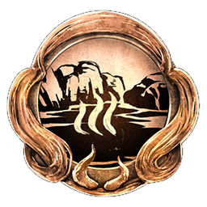
|
Bathed in the first hot spring. Achievement can be obtained in the main mission: The Beast Born of Smoke and Flames. |
The Beginning of a Samurai
|
Reached level 10. |
Full-Fledged Samurai
|
Reached level 100. |
Sudama Swapper
|
Exchanged gifts with a Sudama for the first time. Achievement can be obtained in the main mission: The Beast Born of Smoke and Flames. |
Trinket Triumph
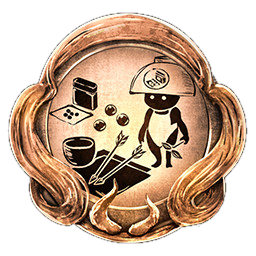
|
Used the Kodama Bazaar. Shrine ⟶ Make Offering ⟶ Kodama Bazaar. |
A Weapon's Mind

|
Listened to the innermost thoughts of a Yokai Weapon. Get a Yokai Weapon to 999 familiarty, and reach max Sentience. Perform this 5 times to unlock the achievement. |
Help Wanted
|
Summoned an Acolyte from a Benevolent Grave 10 times. |
Lover of Letters
|
Displayed a calligraphy scroll in your hut. You can buy calligraphy scrolls from the Hidden Tea House with Glory. |
Friend of Guardians
|
Collected all Guardian Spirits. There are a total of 37 Guardian Spirits. You can view information on Guardian Spirits here. |
Burst Breaker
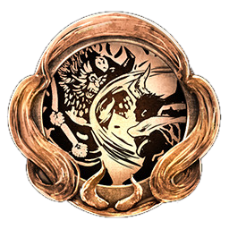
|
Used the Brute, Feral, and Phantom Burst Counters five times each to counter a Burst Attack. |
Latest Masterpiece
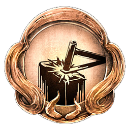
|
Forged an item. Go to Starting Point ⟶ Blacksmith ⟶ Forge ⟶ Forge a new weapon or item. |
Match Made in Heaven
|
Performed a Soul Match. You can perform a Soul Match by fusing together 2 of the same type of Soul Cores. |
Friend to the Kodama
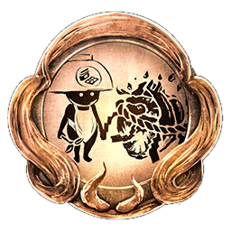
|
Obtained a Kodama's Soul Core. Find a Sudama and trade a Soul Core with it. The Soul Core must be a purified Soul Core. You must first rest at a shrine to purify the Soul Core before trading with the Sudama. |
Remodeling Novice
|
Remodeled a piece of equipment. After finishing the story on Dream of the Samurai (NG), Dream of the
Strong (NG+) will unlock along with Divine Gear. You can
remodel Divine Gear by going to Starting Point
⟶ Blacksmith ⟶ Remodel. To unlock the Remodel option the player must complete the sub mission: The Roaming Artisan in the Dream Region on Dream of the Strong (NG+). |
Twilight Walker
|
Completed your first Twilight Mission. The Twilight Mission's associated Main and/or Sub Missions must be completed before the Twilight Mission can be unlocked. |
Teamwork
|
Completed 10 missions with NPCs or as Expeditions with other users. (Does not include Acolytes.) |
Seasoned Traveler
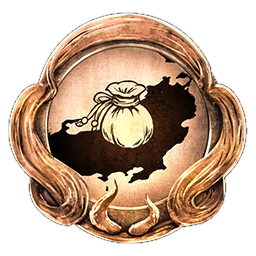
|
Discovered 10 hidden items on the map. There are a total of 35 hidden items, 5 in each region. This achievement only requires 10. Move the cursor around the map until it turns from blue to red, then press X / A. |
Yokai Quelling Master
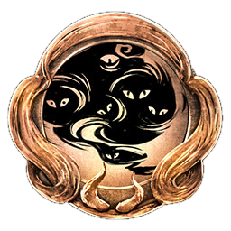
|
Defeated all types of Yokai. There are 34 small Yokai, and 15 large Yokai. All of the large Yokai are
bosses and are un-missable. You can check your progress by going to Titles ⟶ Gameplay Records
⟶ Small Yokai Defeated. Small Yokai
1: Gaki
2: Yoki
3: Enki
4: Ippon-Datara
5: Kappa
6: Red Kappa
7: Dweller
8: Nurikabe
9: Oni-Bi
10: Skeleton Warrior
11: Yamanba
12: Waira
13: Mitsume Yazura
14: Nure-Onna
15: Toxic Slime
16: Aberrant Soldier
17: Karakasa Umbrella
18: Magatsu Warrior
19: Biwa Boku-boku
20: Mujina
21: One-Eyed Imp
22: One-Eyed Oni
23: Onyudo
24: Wheelmonk
25: Flying Bolt
26: Karasu Tengu
27: Rokurokubi
28: Snowclops
29: Koroka
30: Ubume
31: Tesso
32: Lesser Umi-bozu
33: Spider
34: Namahage
Large Yokai
1: Mezuki
2: Gozuki
3: Enenra
4: Yatsu-no-Kami
5: Kamaitachi
6: Onryoki
7: Tatarimokke
8: Gyuki
9: Kasha
10: Ryomen Sukuna
11: Daidara Bocchi
12: Shuten Doji
13: Lady Osakabe
14: Kashin Koji
15: Otakemaru
|
Fuse It or Lose It
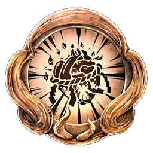
|
Fused any Soul Core until it has reached rank 9. To upgrade a Soul Core go to Shrine ⟶ Manage Soul Cores ⟶ Soul Fusion ⟶ Combine multiple of the same Soul Core to increase the level until it reaches lvl 9. |
Sword Master
|
Acquired a Mystic Art for the Sword. Complete the Dojo Mission: Opening of the Mind's Eye, and unlock one of the Mystic Arts in the Sword Skill Tree. |
Dual Sword Master
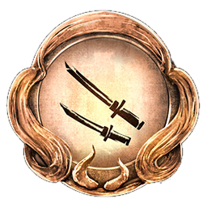
|
Acquired a Mystic Art for the Dual Swords. Complete the Dojo Mission: Master of the Dual Blades, and unlock one of the Mystic Arts in the Dual Swords Skill Tree. |
Spear Master
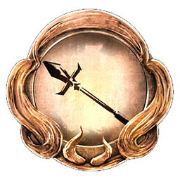
|
Acquired a Mystic Art for the Spear. Complete the Dojo Mission: Hanzo the Demon, and unlock one of the Mystic Arts in the Spear Skill Tree. |
Axe Master
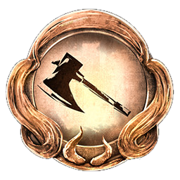
|
Acquired a Mystic Art for the Axe. Complete the Dojo Mission: The Unmoving Mountain, and unlock one of the Mystic Arts in the Axe Skill Tree. |
Kusarigama Master
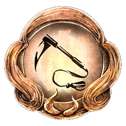
|
Acquired a Mystic Art for the Kusarigama. Complete the Dojo Mission: The Chain That Splits the Sky, and unlock one of the Mystic Arts in the Kusarigama Skill Tree. |
Odachi Master

|
Acquired a Mystic Art for the Odachi. Complete the Dojo Mission: The Tengu's Blade, and unlock one of the Mystic Arts in the Odachi Skill Tree. |
Tonfa Master
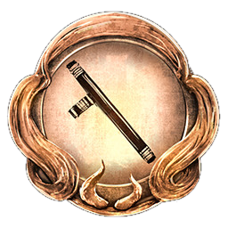
|
Acquired a Mystic Art for the Tonfa. Complete the Dojo Mission: Like Lightning, and unlock one of the Mystic Arts in the Tonfa Skill Tree. |
Hatchet Master
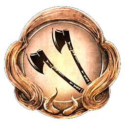
|
Acquired a Mystic Art for the Hatchet. Complete the Dojo Mission: The Unstoppable Whirlwind, and unlock one of the Mystic Arts in the Hatchet Skill Tree. |
Switchglaive Master
|
Acquired a Mystic Art for the Switchglaive. Complete the Dojo Mission: Sharp Eyes, and unlock one of the Mystic Arts in the Switchglaive Skill Tree. |
Splitstaff Master
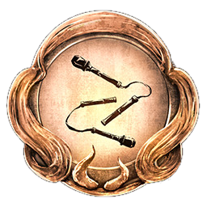
|
Acquired a Mystic Art for the Splitstaff. Complete the Dojo Mission: Breaking Free, and unlock one of the Mystic Arts in the Splitstaff Skill Tree. |
Fist Master

|
Acquired a Mystic Art for the Fist. Complete the Dojo Mission: Strike Like A Yokai, and unlock one of the Mystic Arts in the Fists Skill Tree. |
Ninjutsu Master

|
Acquired a Mystic Art for Ninjutsu. Complete the Dojo Mission: The One Who Lives in the Shadows, and unlock one of the Mystic Arts in the Ninjutsu Skill Tree. |
Onmyo Magic Master
|
Acquired a Mystic Art for Onmyo Magic. Complete the Dojo Mission: The Nine Symbols, and unlock one of the Mystic Arts in the Onmyo Magic Skill Tree. |
Soul Searcher
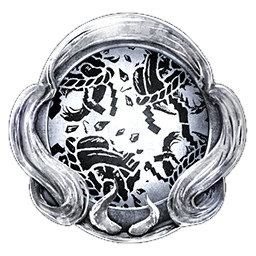
|
Obtained all of the Soul Cores. You can view the complete list of Soul Cores here. |
Let There Be Light
|
Dispelled every instance of the Dark Realm in the main missions. Below is a list of all of the Dark Realms
in Main Missions: Awakening Region:Soaring Region:Shadow Region:
Dawn Region:Twilight Region:Dream Region:Afterglow Region |
Kodama Leader
|
Collected all Kodama. You can view the video guide
here.
Each Region excluding the last Region "Afterglow" have 25 Kodama. There are a total of 150 Kodama in the base game. You start each Region with 3 Elixirs and gain an additional base Elixir for every 5 Kodama found. Below is a list of missions and the number of Kodama in those missions: Awakening Region
Soaring Region
Shadow Region
Dawn RegionTwilight Region
Dream Region |
Spa Lover
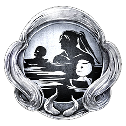
|
Bathed in every Hot Spring. There are a total of 27 Hot Springs in the Base Game. You can view
the video guide
here.
Below is a list of all missions that contain Hot Springs:
Awakening RegionSoaring RegionShadow Region
Dawn RegionTwilight Region
Dream Region |
Tea Connoisseur
|
Appraised your Tea Utensils 50 times. You can appraise Tea Utensils by going to Starting Point ⟶ Hidden Teahouse ⟶ Appraise Tea Utensils. You can check the progress by going to Titles ⟶ Title List ⟶ Ungyo Table List ⟶ Reputable Tea Ceremony Master. The Guardian Spirit Isanagami increases Tea Utensil drop rate by 10 %. |
Dungball Roller
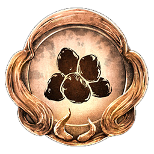
|
Became Ryunojo the Dung Lover's best friend and recieved the Coiled Snake Helmet Smithing Text. You can find Ryunojo the Dung Lover in the main mission: Bird In A Cage in the Shadow Region (3rd Region). You need to give him 30 Dungballs to obtain this achievement. Noble Dungball count as 2 normal Dungballs. You can view the video guide here. |
| Achievement | Description |
|---|---|
A Kindred Light
|
Completed the main mission: A Song to Calm the Storm. |
The Will to Fight
|
Completed the main mission: Eternal Rivals. |
Casting Out the Shadows
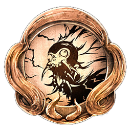
|
Completed the sub mission: Shadows Creep in Kurama. |
Poetry in Motion
|
Collected all of Saigyo's poetry cards. There are a total of 3 poetry cards, you need to find all 3 to
get the achievement.
|
Sundering Arrows
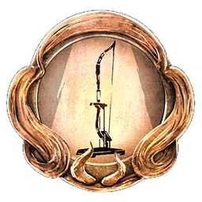
|
Used all of the giant arrows in the main mission: A Song to Calm the Storm. There are a total of 3 giant arrows. You must find the first 2 before fighting Benkei. |
Heretical Glow
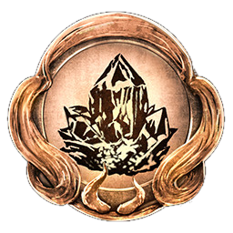
|
Destroyed 150 of the Golden Amrita shards found in the gold mine in the main mission: Eternal Rivals. |
Tengu Crusher
|
Used an attack to knock Minamoto no Yoshitsune off his perch on the bridge in the main mission: Eternal Rivals. |
Demonic Parade-Goer
|
Completed Demon Parade Picture Scroll missions 10 times. |
Kodama General
|
Collect all Kodama in The Tengu's Disciple (DLC 1). There are a total of 25 Kodama.
|
Spa Addict
|
Bathed in every Hot Spring found in The Tengu's Disciple (DLC 1). There are a total of 3 Hot Springs.
|
| Achievement | Description |
|---|---|
The Demon and the Phoenix
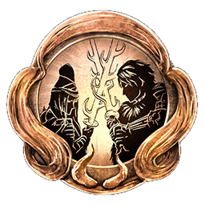
|
Completed the main mission: Suzune in the Flames. |
Guardian of the Gate
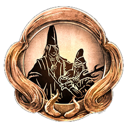
|
Completed the main mission: The Blighted Gate. |
What Must Be Done
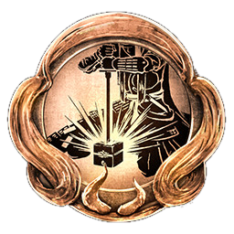
|
Completed the main mission: Palace of the Damned. |
The Ultimate Recognition
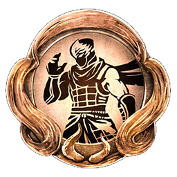
|
Completed the sub mission: The Dragon's Kin. |
The Flame That Lights the Darkness
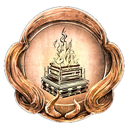
|
Lit all of the fire altars in the main mission: Palace of the Damned. There are a total of 5 fire altars. |
Tsuchigumo Exterminated
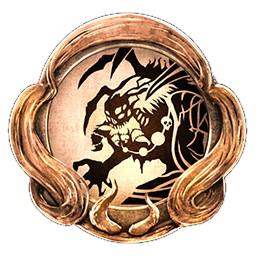
|
Defeated Tsuchigumo while equipped with at least one piece of gear with the special effect "Dragon Ninja". Achievement can be obtained in the main mission: The Blighted Gate, and Underworld Floors: 31, 44, and 76. |
Behind the Bamboo Blinds

|
Caused Oboroguruma to release Amrita from its carriage at least 10 times. Look at which part of the face is glowing and hit the enemy with the specific stance: Glowing Horns = High Stance, Glowing Eyes = Mid Stance, Glowing Tongue = Low Stance. |
True Atonement
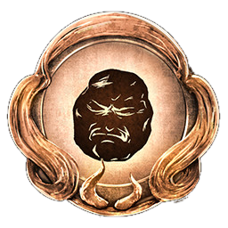
|
Attained 100% Penitence on a Stone of Penance. You can acquire a Stone of Penance by going to Shrine ⟶ Stone of Penance ⟶ offer any item to recieve a Stone of Penance. Charge the Stone by killing enemies. When the Stone is active all enemies become stronger. Must be on Dream of the Strong (NG+) or higher. |
Kodama Pathfinder
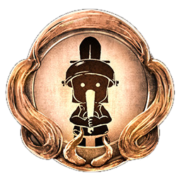
|
Collect all Kodama in Darkness In The Capital (DLC 2). There are a total of 25 Kodama.
|
Spa Fanatic
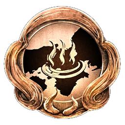
|
Bathed in every Hot Spring found in Darkness In The Capital (DLC 2). There are a total of 4 Hot Springs.
|
| Achievement | Description |
|---|---|
All Things Begin
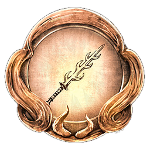
|
Completed the main mission: Dawn of the Demon. |
A Dream of Peace
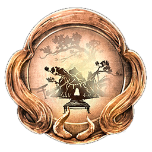
|
Completed the main mission: A Distant Dream. |
The Demon's Den
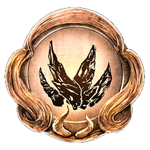
|
Defeated the four demons in the main mission: A Distant Dream.
Defeat: Kinki, Fuki, Suiki, and Ongyoki. |
Spirit Guide
|
Collect all Kodama in The First Samurai (DLC 3). There are a total of 25 Kodama.
|
Spa Connoisseur
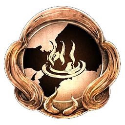
|
Bathed in every Hot Spring found in The First Samurai (DLC 3). There are a total of 5 Hot Springs.
|
Way of the Vanquisher
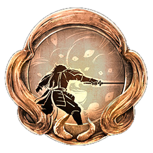
|
Completed the sub mission: Againt All Comers on Dream of the Demon (NG+2) or higher. |
The Path We've Taken
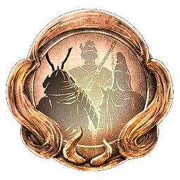
|
Obtained the aid of Tokichiro, Minamoto no Yoshitsune, and Minamoto no Yorimitsu from a Benevolent Grave in the sub mission: A Familiar Glow. |
Cleansing Caskmaster
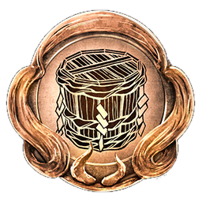
|
Used a Cask of Holy Water in the main mission: Dawn of the Demon to damage an enemy's Ki. |
Honoring the Dead
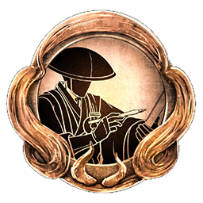
|
Collected all of Kukai's brushes in the sub mission: Words of Respite. There are a total of 4. |
Scent of Danger
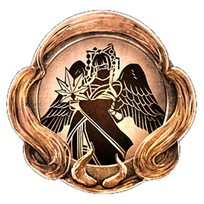
|
Completed the sub mission: Alluring Ancient. To unlock this mission you have to clear the main mission: A Distant Dream and collect 3 Grilled Tang Sweets from the Region. 1 in the main mission: Dawn of the Demon, 1 in the sub mission: In Search of the Elixir, and 1 in the main mission: A Distant Dream. |
A Friend Indeed
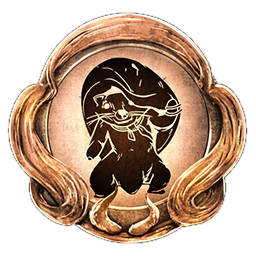
|
Saved all of the Mujina in the main mission: A Distant Dream. There are a total of 3 Mujina in the level. |